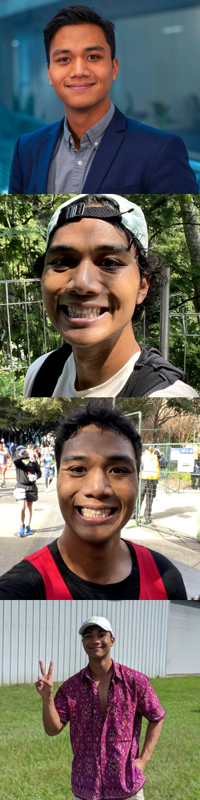

I (he/him) am an HCI Researcher, Roboticist, and Public Policy Practitioner. I build technologies that create novel outputs and equitable outcomes, drawing on signal processing, machine learning, microeconomics, and interaction design. My work ranges from robotic hardware interfaces to algorithms used in environmental policymaking.
I am a first-year PhD student in Computer Science at the University of Arizona, advised by Dr. Sandra Bae. My current work sits at the intersection of sensing, fabrication, and data physicalization. I am also drawn to bio-based materials and actuation. For example, in Casein Metamaterials I proposed engineering milk-protein films that bend and bloom in response to humidity, as biodegradable building blocks for 4D fabrication.
Alongside my studies, I consult for the Asian Development Bank, developing super-resolution algorithms for satellite imagery. Before that, I was a member of the Actuated Experiences Lab and the Energy Policy Institute at the University of Chicago. I hold an MS in Computational Analytics and Public Policy from the University of Chicago and a BS in Electrical Engineering from Georgia Tech.
Contact: a[lastname]@arizona.edu · Resume available upon request.
